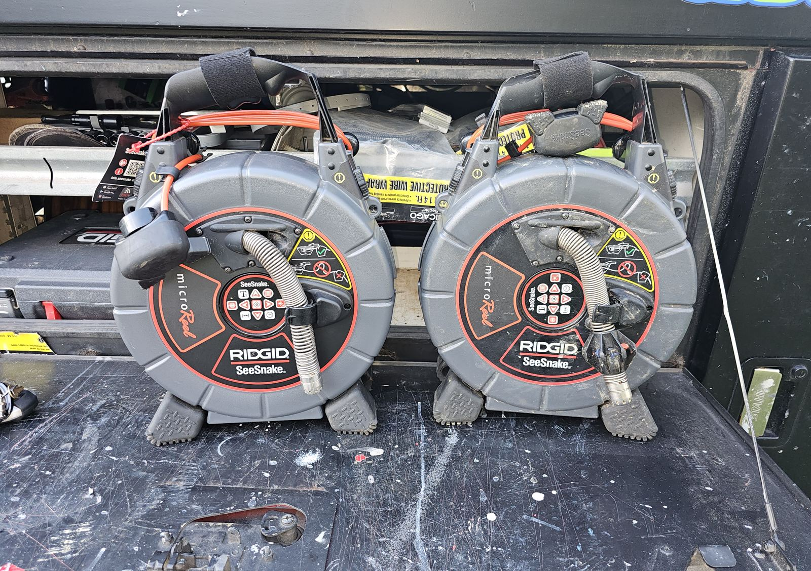
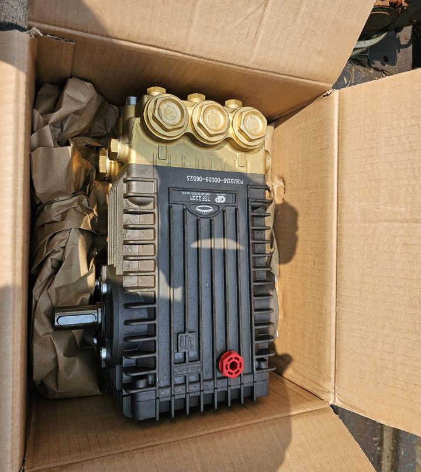
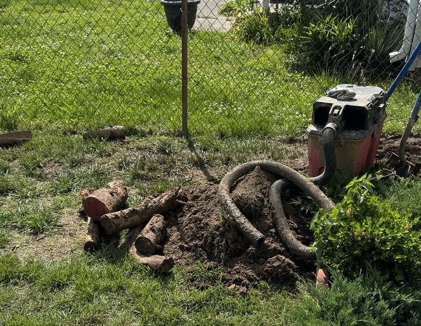
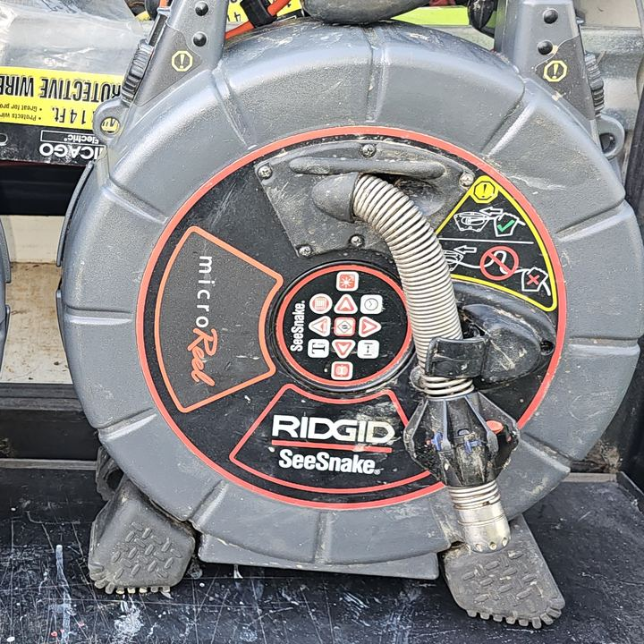
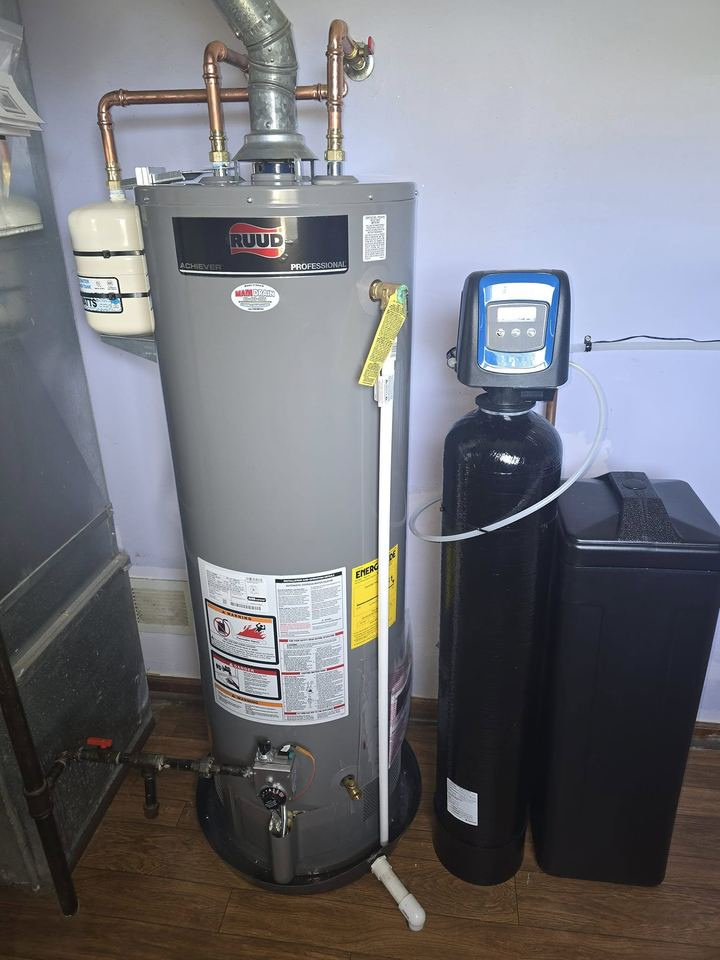
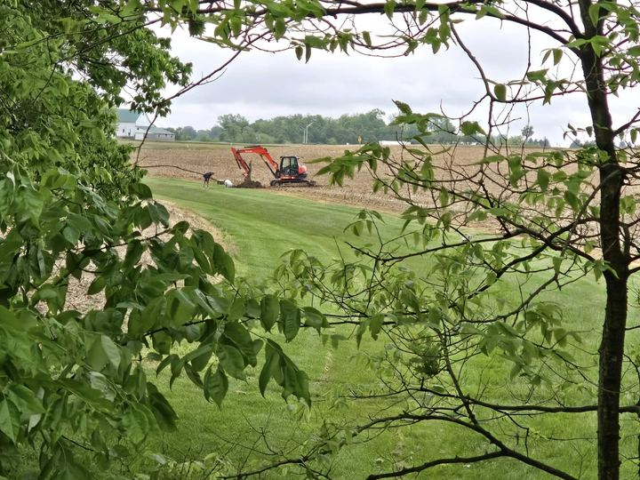
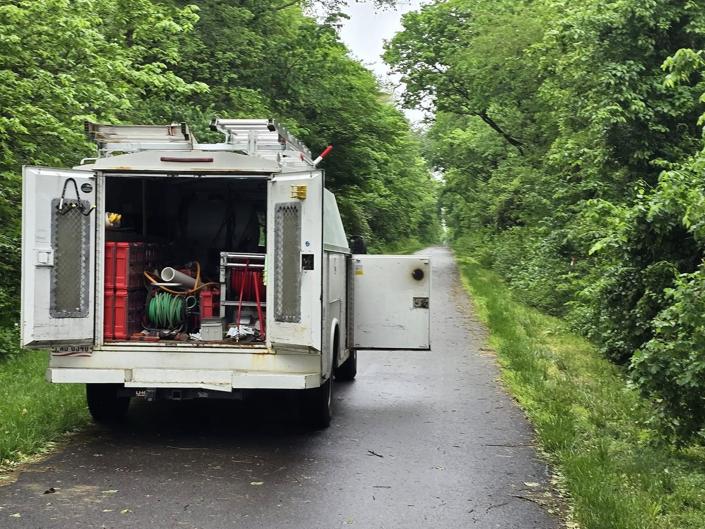
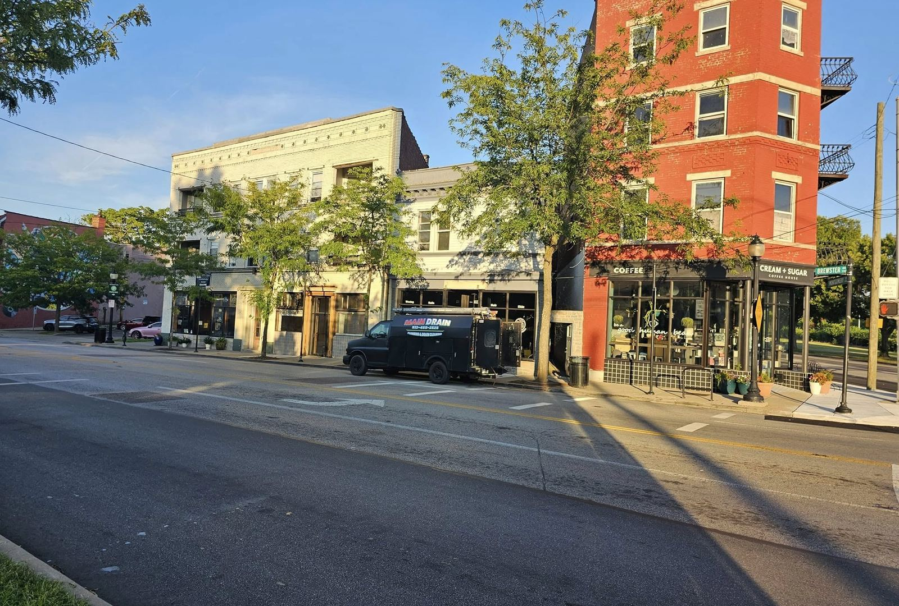

01
Drain cleaning
Kitchen sinks, tubs, showers, floor drains and the main line out to the street. Slow, gurgling or backed up: tell us which fixture and how long it has been going on.
Ask about a slow drain
0000.0 FTMiddletown, OH · Butler County
Drain cleaning, hydro jetting, root removal and sewer camera work, plus water heaters and softeners. Based in Middletown and working between Cincinnati and Dayton.
5.0 stars on GoogleRead the reviews0012.0 FTCH 02 · Services
The logo on the truck says it plainly: plumbing & drain cleaning. Here is what that covers, in the order a camera would meet it on the way to the main.
01
Kitchen sinks, tubs, showers, floor drains and the main line out to the street. Slow, gurgling or backed up: tell us which fixture and how long it has been going on.
Ask about a slow drain
02
“Specializing in Hydro Jett cleaning.” Water at high pressure scours the whole pipe wall, so grease, scale and sludge come out instead of a hole being punched through the middle of the clog.
See the jetter
03
Tree roots find the joints in older sewer lines and keep growing. Root removal is the other half of what Main Drain specializes in: cut them out, then jet the line clear.
Ask about roots
04
A camera on a push cable goes down the line and shows what is in there: roots, a break, a belly, buildup. You see the footage instead of guessing what is under the yard.
Ask about a camera look
05
The plumbing half of the logo. “New Water Heater and Softener for a customer in Carlisle” is one of their own posts. Tell us what you have now and what it is doing.
Ask about a water heater
06
“Jetting out some field tile in Xenia today.” The same jetter works on farm drainage tile, out past the houses and into the fields.
Ask about field tile
Jetter hose reel Red bins on the shelves Side doors open0160.0 FTCH 03 · The jetter
This is the truck that turns up: doors open, hose on the reel. When a line is packed with grease or roots, a cable only opens a hole. Water at pressure clears the full width of the pipe, from the fixture to the main.
Their photo · the Main Drain truck on a job
0205.0 FTCH 04 · The main line
Every sink, tub and toilet in the house drains into one line. When the main backs up, everything does. It is where the slogan ends: from the fixture to the main.
Camera down the line to find what is in there and how far out it is.
Jet it, or cut the roots out, from the fixture to the main.
Camera back down so you can see the run open on screen.
0230.0 FTCH 05 · Where we work

Based in Middletown, Butler County. Our own posts show jobs from Carlisle and Xenia down to Cincinnati. Not sure if you are in range? Call or text and ask.
0245.0 FTCH 06 · Before you call
A snake (cable machine) bores through a clog so water can pass. A jetter uses water at high pressure to scour the whole inside of the pipe, so grease, scale and roots come out with it. Which one fits depends on the line and what is in it.
Yes. A sewer camera on a push cable goes down the line and you see the footage: roots, a break, a sag or buildup, and roughly how far out it is.
Yes. Tell us what you have now (gas or electric, roughly how old) and what it is doing, and we will talk through the options.
Yes. We are based in Middletown in Butler County, and our posts show jobs in Carlisle, Cincinnati and Xenia. Call or text with your town.
Which drain or fixture, what it is doing (slow, gurgling, backing up), how long it has been going on, and your town. If you have a photo, text it to us.
0250.0 FTCH 07 · Request a quote
Call or text with the drain, the town and what it is doing, or send the form and we will reply.